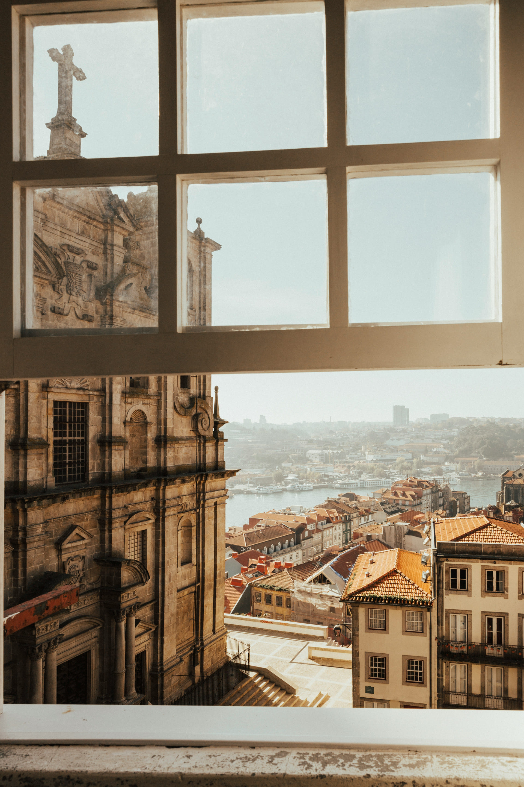
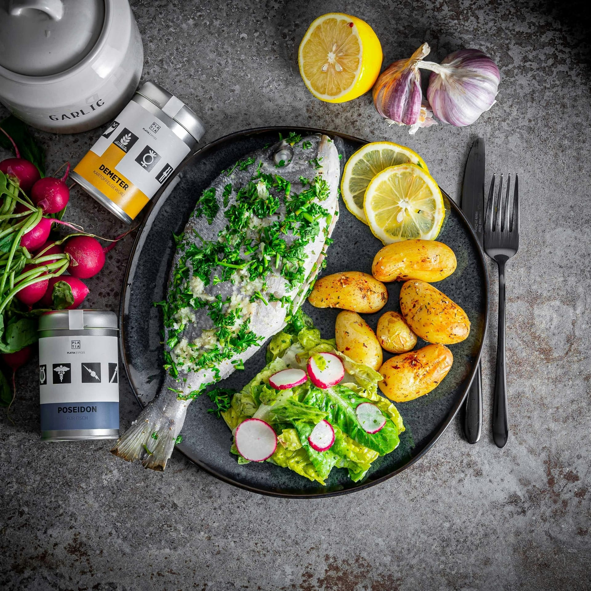

People of my keen, are rather people who have the south in them but also big time travelers, I'm not cut for the life in big cities, even less so if the sun is hidding most of the year. Laid back in nature I aspire to live close to coastal areas that bords the Mediterannen sea to the Atlantic Coasts of Portugal.
Now for about over 4 years I felt drawn in learning the language of my origin, Portuguese. And from a place like Porto I felt a warmth and a familiar atmosphere where upon a visit I instantly felt it like a place I could call it home.
 Mediterannen Food is something praised all over the world, and It is to me a source of hapiness that can't be measured in numbers.